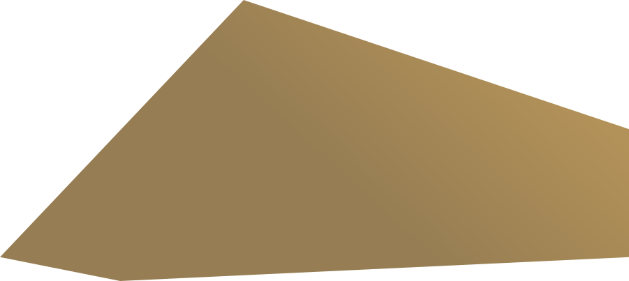
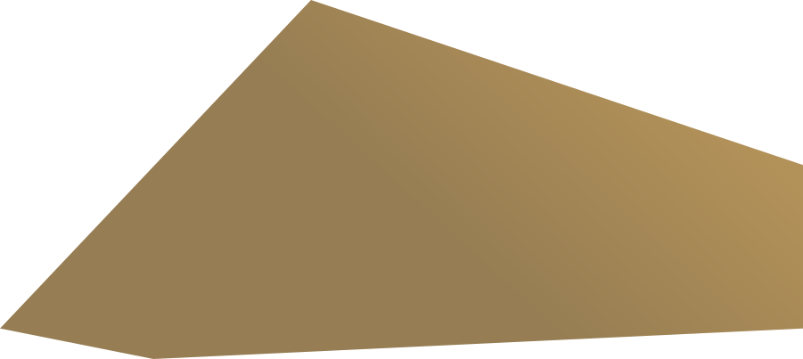

Устойчивое развитие
Полный обзор читайте в Годовом отчете на стр. 84-91
Подход Холдинга «Селигдар» к вопросам устойчивого развития сформулирован в цели ведения деятельности, обозначенной в стратегии. «Это объединение усилий на всех уровнях управления для создания ценности и улучшения качества жизни за счет повышения эффективности работы, используя только передовые и проверенные технологии и подходы в производственном, ресурсосберегающем, социальном аспектах».
Деятельность Холдинга строится на принципах:
- Создания максимально благоприятных условий для сотрудников Холдинга, способствующих личностному и профессиональному росту;
- Ответственного отношения к окружающей среде и обществу, оптимального расходования ограниченных природных ресурсов;
- Построения эффективной системы корпоративного управления;
- Открытости и прозрачности бизнеса для всех заинтересованных сторон;
- Этичного поведения и уважительного отношения ко всем контрагентам, партнерам, представителям местных сообществ;
- Применения современных технологий и внедрения стандартов бережного производства.
Вопросы устойчивого развития включены в основные положения действующей Стратегии устойчивого развития. При формировании стратегии «Селигдар» применил интегральный подход - консолидировал экономические, экологические и социальные задачи в единую программу долгосрочного развития.
Ключевые ESG показатели 2022 года
|
ESG-рэнкинги и индексы |
|
|
ESG рэнкинг RAEX |
53 из 160 (Индикативная оценка ESG рейтинга - BB) |
|
Рэнкинг ESG-прозрачности российских компаний Эксперт РА |
24 из 101 |
|
ESG-индекса РБК и НКР |
Категория I «высокий уровень» |
|
Рейтинг открытости экологической информации горнодобывающих и металлургических компаний России Всемирного фонда дикой природы (WWF) |
16 место из 39 |
|
Рейтинг лучших работодателей России 2022 Forbes |
«серебряный» статус |
|
Рейтинг российских работодателей РБК |
ТОП-10 среди горнодобывающих предприятий |
|
ESG-рейтинг устойчивого корпоративного управления (агентство корпоративного развития «Да Стратегия» в партнерстве с Университетом Перуджи) |
уровень А «Лучшая корпоративная ESG практика РФ» |
|
E – экологические показатели |
|
|
Более 440 тыс. саженцев высажено на площади 217 га в Нерюнгринском районе Якутии |
|
|
На 33% сократился удельный водозабор |
|
|
S – Социальные показатели |
|
|
Более 3,9 тыс. сотрудников |
|
|
Открыт новый физкультурно-оздоровительный комплекс на базе в г. Алдане (Якутия) |
|
|
8 новых общежитий построено на производственных комплексах |
|
|
53 млн руб. направлено на поддержку регионов и местных сообществ |
|
|
G – показатели корпоративного управления |
|
|
4 независимых директора в Совете директоров |
|
|
90% принципов Кодекса корпоративного управления полностью соблюдаются |
|
Членство в профессиональных ассоциациях, организациях
Холдинг «Селигдар» входит в ряд отраслевых и общественных организаций, является членом Торгово-промышленной палаты Российской Федерации, Союза старателей России и Союза золотопромышленников.